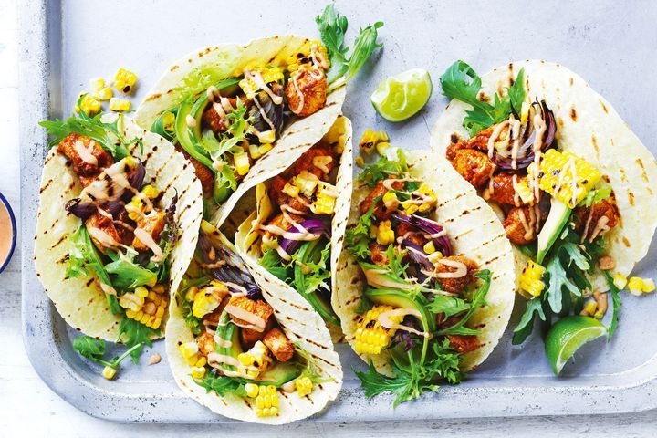

Chicken Tacos

These easy slow cooker chicken tacos are easy to make with just 3 ingredients in your crockpot.
Spoon the filling into warm tortillas for a very tasty meal any day of the week.
Ingredients:
- Broth
- Taco seasoning
- Chicken
Steps:
- Mix chicken broth and taco seasoning in a bowl
- Pour chicken broth over the chicken and then place it in a slow cooker
- Cook on low for 6 to 8 hours. Then shred the chicken